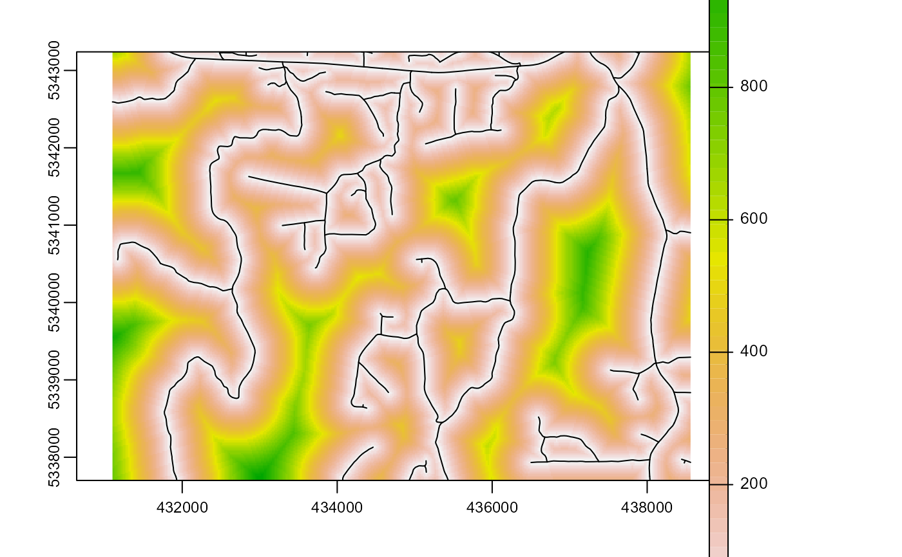

Distance to access layer
calculate_distance.RdPer pixel distance to nearest access vector. Intended to be used as a `cost` constraint
within the sample_clhs function
Arguments
- raster
spatRaster. Raster to be used to calculate pixel level distance to access layer.
- access
sf. Road access network - must be lines.
- plot
Logical. Plots output strata raster with samples.
- filename
Character. Path to write output samples.
- overwrite
Logical. Choice to overwrite existing
filenameif it exists.
See also
Other calculate functions:
calculate_allocation(),
calculate_coobs(),
calculate_lhsPop(),
calculate_pcomp(),
calculate_sampsize()
Examples
#--- Load raster and access files ---#
r <- system.file("extdata", "kmeans.tif", package = "sgsR")
sr <- terra::rast(r)
a <- system.file("extdata", "roads.shp", package = "sgsR")
ac <- sf::st_read(a)
#> Reading layer `roads' from data source
#> `C:\Users\tgood.stu\AppData\Local\Temp\RtmpCYYtR3\temp_libpath29b8306a58fc\sgsR\extdata\roads.shp'
#> using driver `ESRI Shapefile'
#> Simple feature collection with 167 features and 2 fields
#> Geometry type: MULTILINESTRING
#> Dimension: XY
#> Bounding box: xmin: 431100 ymin: 5337700 xmax: 438560 ymax: 5343240
#> Projected CRS: UTM_Zone_17_Northern_Hemisphere
calculate_distance(
raster = sr,
access = ac,
plot = TRUE
)
#> calculating per pixel distance to provided access layer
#> class : SpatRaster
#> dimensions : 277, 373, 2 (nrow, ncol, nlyr)
#> resolution : 20, 20 (x, y)
#> extent : 431100, 438560, 5337700, 5343240 (xmin, xmax, ymin, ymax)
#> coord. ref. : UTM Zone 17, Northern Hemisphere
#> sources : kmeans.tif
#> memory
#> names : strata, dist2access
#> min values : 1.000000000, 0.006621213
#> max values : 10.00, 1061.66
calculate_distance(
raster = sr,
access = ac,
plot = TRUE,
filename = tempfile(fileext = ".tif")
)
#> calculating per pixel distance to provided access layer

#> class : SpatRaster
#> dimensions : 277, 373, 2 (nrow, ncol, nlyr)
#> resolution : 20, 20 (x, y)
#> extent : 431100, 438560, 5337700, 5343240 (xmin, xmax, ymin, ymax)
#> coord. ref. : UTM Zone 17, Northern Hemisphere
#> sources : kmeans.tif
#> memory
#> names : strata, dist2access
#> min values : 1.000000000, 0.006621213
#> max values : 10.00, 1061.66